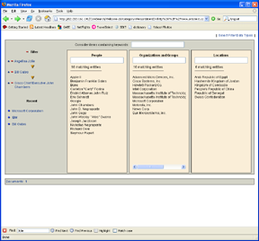

Status:
Semantic annotation (SA) is about attaching meaningful structures to resources like documents or video streams in such a way that they can be used by computers to enhance the usefulness of those resources.
The key to successfull deployment of applications based on SA is how to produce the annotation at low cost and high quality. There are three possibilities:
Building on the University of Sheffield's world-leading GATE system (http://gate.ac.uk) the Semantic Annotation Factory Environment (SAFE) is a new approach to options 2. and 3. for SA production. SAFE deals with all the issues in SA deployment from feasibility study and cost analysis through system bootstrapping and implementation into maintenance and adaptation. To do this SAFE supplies
SA is not new (section XXX discusses several well-established applications) but in recent times the technology underlying SA has changed in three significant ways:
These technological advances mean that SA is now applicable in more domains and for more types of application than was previously the case, and a raft of new products are appearing accordingly, for example:
Section XXX discusses these new applications.
How to
when a BBC archivist, for example, attached thesaurus categories to programme segments for indexing they have performed semantic annotation.
A new breed of consumer services are appearing that rely on information extracted from the web by automatic means. This information is created in the form of annotation (added-value information attached to documents). When combined with structured data sources annotation can meet a variety of emerging needs for enhanced control, security and access. Examples include
The requisite annotation can be done manually, and this works well in cases like flikr and delicio.us where the annotators benefit directly from their own work (creating their own "folksonomies"). In other cases, where the task is simple and the domain of application specific, automatic annotation can work to an acceptable accuracy level (and a number of state-of-the-art systems of this type are available in GATE). Where neither of these things is true what is needed is an Annotation Factory, which combines multiple technologies, staff roles and processes in order to reduce the cost of annotation to acceptable levels.
Current annotation systems address one or more of the issues for annotation factories, but none until now have had wide coverage, and few have addressed the workflow and methodological questions, or defined how to go about deciding exactly what kind of annotation process is appropriate for a given business case. SAFE is a software suite and methodology for implementing annotation factories.
Information Extraction (IE) is the technology that makes annotation of web-scale document collections feasible (see http://gate.ac.uk/sale/ell2/ie for details of what IE systems can do and the accuracy levels of the current state of the art). IE has improved in recent years to the degree that commercial deployment is now becoming common, but it remains an imperfect and potentially costly process. In order to exploit it effectively application developers need to implement a process that we may call an Annotation Factory.
A modern factory engaged in the production of high-tech goods combines a large degree of automation with skilled labour of various types and quantities. Robots often play a significant role, although they are never altogether unaccompanied: at the very least service engineers must attend their operation, and in most cases there will also be staff who take care of reconfiguring robotic equipment for new product lines or refinements to the existing processes and products. The same is true of annotation factories: a number of different types of human involvement are required, from the initial specification process through maintenance and evolution. Current IE tools have not addressed the methodological, multi-role and process elements of annotation factories.
SAFE is a software suite and a methodology for the implementation and support of annotation factories. It is intended to provide a framework for commercial annotation services, supplied either as in-house units or as outsourced specialist activities.
There are a number of different types of staff required for an effective annotation factory including
SAFE defines the support tools for these different roles, and the workflow by which they may combine with automatic IE systems to provide cost-effective annotation services.
The rest of this document discusses the novelty of the work, and looks in more detail at staff roles in annotation factories. See also this talk at the Salzburg eCulture symposium.
Information Extraction (IE) is the process of automatically analysing text (and, less often, speech) to populate fixed-format, unambiguous data structures such as spreadsheets, link-analysis engines or databases. An IE system is a dynamic object which represents a compromise between information need and development cost. Almost never do the information need and the data remain static. Therefore applications software using IE has to provide a mechanism to tailor the extraction components to new information needs and to new types of data. Up to now, no single mechanism has been discovered that covers all cases, meaning that IE software has to support a wide spectrum of adaptation interventions, from skilled computational linguists, through content administrators and technical authors, to unskilled end-users providing behavioural exemplars. In each area significant research streams exist and have made good progress over the past decade or so. What has not been done is to construct a unified environment in which all the different adaptation interventions work together in a complementary manner.
The three principal mechanisms for IE adaptation in leading HLT research streams are:
In addition, underlying the adaptation process are automated measurement and visualisation tools, and frequency-based document search (or information retrieval) tools.
GATE has both a class library for programmers embedding LE in applications and a development environment for skilled language engineers. SAFE, however, has to support a wider constituency of users. There are two main cases.
First, annotation of training data for learning algorithms should be a task requiring little skill beyond that of a computer-literate person (because training data volumes are typically large and therefore the labour involved has to be cheap to make the process economic). For the same reason the annotation environment should be as productive as possible, for example by bootstrapping the annotation process with mixed-initiative learning and by providing a voting mechanism for multiple simultaneous annotators (this is necessary to guarantee quality with low-skilled staff).
Second, data curation or systems administration staff may become involved in customising extraction systems. These types of people take a training course of a week or two, and are expected to use a richer toolset, including things like ANNIC-based JAPE rule authoring.
Extraction is not an application in itself, but a component of information seeking and management tasks. Despite the breadth and depth of literature describing algorithms, evaluation protocols and performance statistics for IE the technology lacks a clear statement of how to go about specifying and implementing IE functionality for a new task or domain. In the same way that GATE is not just an implementation but also an abstract architecture, so SAFE can increase its impact by defining a methodology.
The methodology covers:
The applications context of SAFE suggest different types of user profiles:
Depending on the context, a user could have more than one profile, being for instance both Language Engineer and Information Curator.
Annotators are in charge of annotating entities, relations or events on a set of documents with regard to an ontology or to a flat list of named entities. They must be able to access the documents remotely on the web. The annotated documents can be stored directly or used to bootstrap a Machine Learning system. The Annotator interface includes some information about the number of remaining documents to be annotated and some basic message system for interacting with an Information Curator.
Different Annotators may work on a single corpus in order to speed up the process of annotation. They may annotate the same documents, in order to make sure that the quality of the annotation is optimal, and to evaluate Annotator performance.
A Mixed Initiative system can be set up by an Information Curator or a Language Engineer and used by an Annotator. This means that once a document has been annotated manually, it will be used to generate a Machine Learning (ML) model. This model will then be applied on any new document, so that this document will be partially or totally annotated. The Annotator validates or corrects the annotations provided by the ML system. This makes the annotation task much faster.
Language Engineers have some knowledge of linguistic engineering, thus they are able to create or modify a set of linguistic resources. Unlike the annotators, these staff work on resources producing automatic annotations. These resources are combined to produce a service. like the Annotators, Language Engineers can be located in very different parts of the world, and thus they access the system remotely. Many of the tools used here are directly derived from GATE.
Information Curators are in charge of the configuration of the system. Being based on a Service Oriented Architecture, new services can be added to the network. Such services can be for instance storage of corpora or processing resources, or an annotation service taking as input one/more documents and applying one/more processing resources. The Information Curator can get information about the performances of a service, by keeping a part of the data for evaluation, or about performance of the manual annotation. The latter means that the Information Curator will be informed if one of the Annotators provides annotations which systematically differ from the other Annotators. In this way a better explanation of its task could be sent to the Annotator, which should improve the overall quality of the annotation.
TODO: stuff about garlik etc from above?
"semantic annotation successes" from jocch, minus perseus
mower
From safe-reqs:
Annotation Factories are not useful in and of themselves, but only in service of other applications that make use of annotation to improve information and knowledge analysis and management. This section looks at applications of SAFE in the context of web analysis, conceptual search and question answering. Some examples:
o KIM from OntoText, currently providing conceptual search over entities and simple relations extracted from news text relative to the PROTON ontology. Functions:
o NewsByPhone, a proposed on-demand clippings service accessed by phone. Functions:
o NetResearch, a proposed pay-per-use web research service. Functions:
These types of application illustrate the balance of automation and human input that SAFE needs to support: whilst it is possible to do entity extraction over news texts with sufficient accuracy to support some of the basic types of conceptual query provided by KIM, it is not possible to automate the human interface functions in NewsByPhone or the complex data collection functions in NetResearch. Therefore there needs to be a mix of machine and manual work underlying these applications.
SAFE is an architecture which is independent of the language of the documents. As such it can support multilinguality, provided that the required linguistic resources are available.
(This is not now being built, but is still a good application example.)
The application developped in the context of E-Swan will (would have!) provide an improved access to the content of internet forums, which are an excellent source of information on products. Users of the same product express their opinion about it and discuss any issues that have arisen since they bought it, such as incompatibilities with other products. Accessing the information from forums is thus very useful for a consumer and can help him in his choice before purchasing a product. This first version of the application will probably cover digital cameras only. The application will be a sort of forum metasearcher.
This application might be later extended to magazines and specialized web sites and not only to forums.
The application will provide the following functionalities to the user:
The access to the content of the threads will be made through a set of different filters, possibly using Ontotext CoreDB.
Here is an example of use. Let's imagine that I am considering buying a digital camera. I have a few references in mind, because finding about the price or availability of a product is usually an easy task. My concern is that I want to make sure that this component will work in my configuration, does not have major drawbacks and I want to know what people think of it in general. The camera I am interested in buying is an 'Kodak Z740'. If I use a generic tool like google, I am likely to get all sort of references, especially price lists from merchant websites or the official website of the manufacturer, which is unlikely to contain an objective criticism of the product. Most forums have a search functionality, which can be helpful to find threads or posts related to the product but I'll still have to read a lot of pages to get the information I need and repeat the operation for different forums.
The E-Swan application will tackle these issues by providing both functionalities. If the user enters a product description such as 'Kodak Z740' in the query box of the interface, the application will identify a specific entry in the knowledge base. The same entry would be also found by variants of the description, such as 'Z740'. The information returned by the system will contain possibly the different manufacturer, the underlying technologies or features (e.g. zoom, resolution). It will be possible to navigate in the knowledge base to find a more appropriate entry, for instance if no information is available for this specific model, I may still know about the Kodak cameras in general.
Once an entry in the knowledge base has been selected (which hopefully will be the first proposed by the system), some general information will be displayed on the interface such as:
Known issues:
By clicking on any of these elements, one can see a list of Threads where these aspects are mentionned. Only the releveant posts or parts of posts are shown. A link to the original Thread will be available. A list of entities from the ontology which have been found can also be used in order to refine the list of results.
These categories (options, price, etc...) do not link to real world data but correspond to aspects of a product which have been evaluated as positive or negative by the users. In the above example quality of image ++ means that the quality of image is evaluated by the users as being very positive, unlike the functions which is a negative point.
The know issues will list other products found in the ontology for which a problem has been found. A problem can for instance be an incompatibility. These relations between products will be obtained via specific hand crafted rules of Machine learning.
A public website is provided that fronts a knowledge base of data extracted from 15 or so news websites. The type of complex conceptual search supported by the KIM Web UI is available (we don't expect most users to choose it, but librarians or data curators might do so), but also various canned queries and graphical presentations for commonly requested information. For example
Core DB snapshot (user clicks on entities from the columns, progressively restricting the search space until selecting a document or timeline view). (This is an OntoText prototype not for external publication.)

This use case (and probably all others) must also support keyword query over the news texts and over the knowledge base, using standard technology.
The BBC sees the type of smart queries provided over news in the previous example and requests the creation of a knowledge base and front-end for a thousand hours of nature documentary. Supplying this system involves:
I want to book a cottage on the North York Moors coast. I define a few entries for a database table (location, number of bedrooms, cost, phone number, URL...) and submit a textual request for the DB to be filled. In a couple of hours I get the result on-screen and can dump it out as a CSV if required.
In this case the process is mainly manual, assisted by OBIE tools where possible.